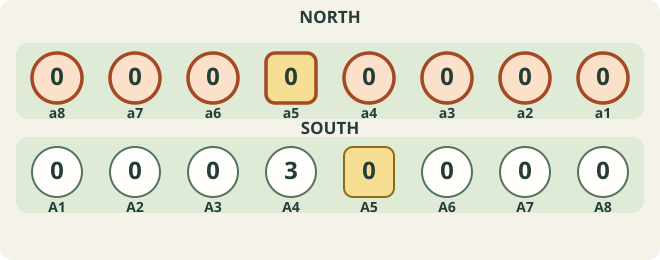
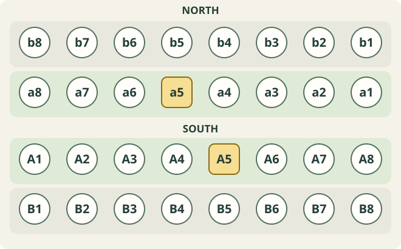
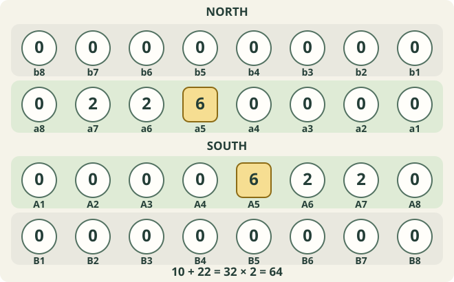
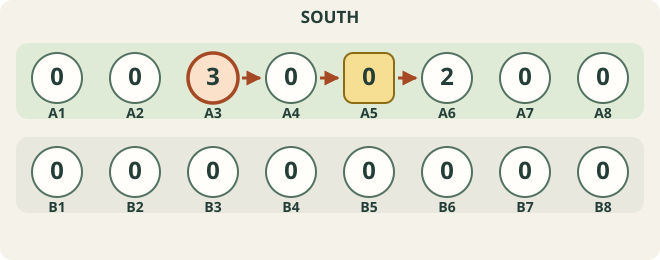
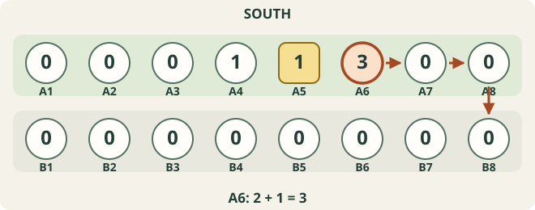
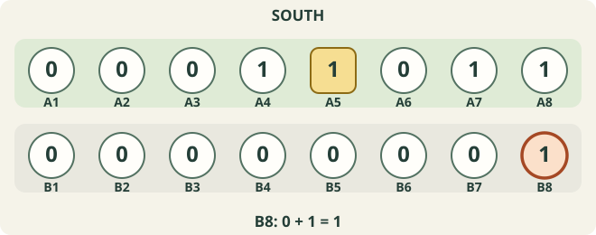
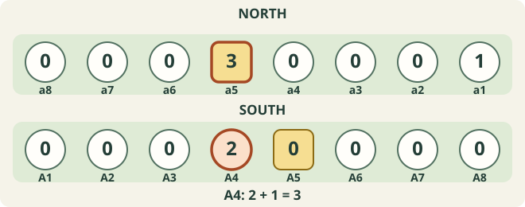
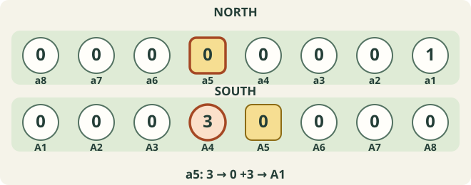
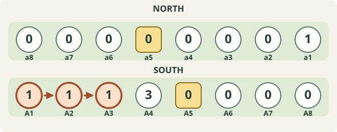
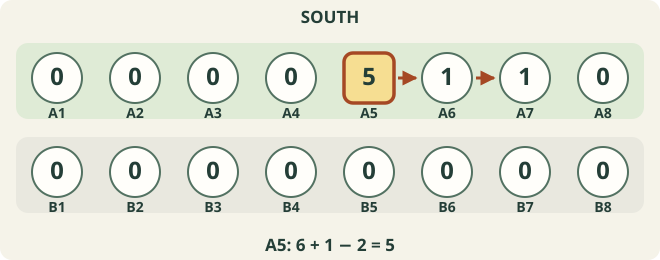

Bao rules,
step by step.
Learn the board, follow the pieces, and discover how a single move can keep going. This guide explains the rules used in this game, one step at a time.
- 2 players One board, two sides
- 64 pieces Sow within your own two rows
- 2 phases Namua → Mtaji
Rules used here: v0.1.0-draft / R-002. An illustrated guide to this implementation.
What are you trying to do?
Bao la Kiswahili is a two-player mancala game played with 64 kete (seeds or pieces). You move pieces around your own two rows and capture pieces from the opponent’s front row.
Empty the opponent’s front row
If all eight pits in the opponent’s front row become empty, you win—even during a move.
Leave the opponent without a move
You also win if the opponent has no legal move on their turn. Having no capture is different: a non-capturing move may still be available.

Read the board
The board has four rows of eight pits. Each player uses the two rows nearest them. The front rows face each other in the middle; the back rows are on the outside.

- kete
- The playing pieces. All pieces are interchangeable; the pit they occupy determines whose side they are on.
- nyumba
- The house: the fifth front-row pit from each player’s own left, A5 or a5. It has special rules while owned.
- kichwa
- The entry pits at the two ends of the front row: A1/A8 or a1/a8. Captured pieces enter here.
- kimbi
- The pits next to the entry pits: A2/A7 or a2/a7. Like the ends, they constrain the entry side for captures.
Set up the pieces
- Put 6 pieces in your nyumba, and 2 in each of the next two pits to your own right.
- Keep the remaining 22 pieces in your hand. The back row starts empty.
- South moves first. The players then alternate turns.

First phase: namua
Use one piece from your hand at the start of each turn. It must be placed in a permitted occupied front-row pit.
Second phase: mtaji
Once both hands are empty, play continues using only the pieces on the board. If the game has not ended earlier, this happens after 44 turns in total.
Sow, continue, stop
To sow, lift the required pieces and drop one into each successive pit. Stay within your own two rows: at the end of the front row, turn into the back row, then return at the other end.
The example below is a non-capturing mtaji move. Only South’s two rows are shown. RIGHT travels rightward along the front row and leftward along the back row; LEFT follows the reverse route.



Namua: use a piece from hand
First, look for a capture
Find an occupied pit in your front row facing an occupied pit in the opponent’s front row. If any such pair exists, you must choose a capture. Add one piece from hand to your pit, then take every piece from the facing opponent pit.
If there is no capture: takata
Takata is a non-capturing move. Add one piece from hand to a permitted occupied front-row pit, lift its contents, then sow left or right. Continue relay sowing when required.
Which pits may start a namua takata?
- Start in the front row, never in an empty pit or the back row.
- Normally choose a pit holding at least 2 pieces before the addition. A 1-piece pit is permitted when no eligible front-row starting pit holds 2 or more, or while you still own your nyumba.
- An owned nyumba holding 6 or more cannot normally be the starting pit. If it is the only occupied front-row pit, use the special two-piece start described below.
- If your only occupied front pit is an end pit, you cannot start by emptying it toward the back row.
Capture and choose an entry side
Captured pieces move from the opponent’s front row to your side. Place the first captured piece in the chosen kichwa itself, then continue inward along your front row. Your capturing pit keeps the pieces already in it.
Here is a namua example. Only the front rows are shown; these are explanatory positions, not the initial setup.



The entry side is not always a free choice
- Capture at your own pit 1 or 2: enter at your left kichwa, pit 1.
- Capture at your own pit 7 or 8: enter at your right kichwa, pit 8.
- At pits 3–6, the first capture of a namua move allows either side. Later captures, and mtaji captures, preserve the current sowing direction at these middle pits.
When does a later capture happen?
During a capturing move, the last piece must land in your front-row pit that already contained pieces, and the facing opponent pit must also contain pieces. Capture before considering relay sowing. Repeat this check after each sowing run.
At kichwa or kimbi, the forced entry side can change the direction. At the middle pits it stays the same. If you empty the opponent’s last occupied front pit, the game ends immediately, before sowing the captured pieces.
Mtaji: play from the board
Both hands are now empty. Do not add a piece. Choose a legal starting pit with at least 2 pieces, lift all of them, and sow from the next pit. Capture remains compulsory whenever a capturing move exists.
- Look for a starting pit with 2–15 pieces, in either your front or back row.
- A capturing start must end its first sowing run in an already occupied front-row pit facing an occupied opponent pit. Choose one of these starts if any exist.
- If none exist, play a takata. Use a front-row pit with at least 2 pieces when available; use the back row only when the front row has no such starting pit.
- Continue sowing and checking the last pit under the same capture / relay / stop principles. A takata never captures during the turn.
Large piles, end pits and no legal move
Under this adopted baseline, a pit with 16 or more pieces cannot start a capturing move, but may start a takata if the other conditions allow it. Empty pits and 1-piece pits cannot start any mtaji move.
If every one of your 16 pits holds at most 1 piece, you have no legal move and lose. The restriction against emptying your sole occupied end pit toward the back row also applies to takata.
Nyumba: the house
A5 and a5 are the house positions. At the start, each is owned and holds 6 pieces. The position remains a house-shaped pit even after its special status is lost.
Finishing a namua sowing run at your house
The following applies when your owned house holds at least 6 pieces after the last piece arrives.
- During a takata: stop there. You do not lift the house contents to continue.
- During a capturing move, if the facing opponent pit contains pieces: capture first. You cannot choose to stop instead.
- During a capturing move with no capture available there: choose NYUMBA STOP to keep the house, or NYUMBA USE to lift its contents and continue in the same direction, giving up its special status.
The two-piece start
In namua, if you cannot capture and your owned house is the only occupied pit in your front row, add one piece from hand to the house, then take just 2 pieces from it and sow them left or right.

Ownership, fewer than 6 pieces, and mtaji
The two-piece start does not empty the house. When it drops below 6, the stopping rules that require 6 or more do not apply. Under the adopted baseline, if ownership remains and it later reaches 6 again in namua, those rules can apply again.
Losing all house pieces to a capture, or choosing NYUMBA USE, removes its special status. In mtaji, the namua two-piece start and optional house stop are not available. Details of house status across phases differ between sources; this page follows the game’s adopted baseline.
Use the game screen
- Choose computer or local two-player mode. Against the computer, choose a difficulty and whether you play first (South) or second (North), then press START GAME.
- Tap or click a highlighted pit, then choose one of the moves displayed below the board. The game shows legal choices and carries out the sowing automatically.
- HAND is the number of pieces still in hand. NAMUA / MTAJI shows the phase. NEW GAME ends the current game and returns to setup after confirmation when needed.
- LEFT / RIGHT
- The sowing circuit, from the player’s own viewpoint: LEFT goes left along the front row, RIGHT goes right. The back-row travel direction is reversed. North is also reversed on screen.
- LEFT CAPTURE / RIGHT CAPTURE
- In namua, these select the left / right entry for captured pieces. In mtaji, the direction describes the initial sowing from your chosen pit; the later capture entry follows the capture rules.
- NYUMBA STOP / NYUMBA USE
- When offered with a move, STOP chooses to stop at an eligible house; USE chooses to empty it and continue. You select this with the move before its animation.
Rules used here and sources
This is an illustrated explanation of the rules used by this browser game. It follows the Japanese guide’s public draft v0.1.0-draft, baseline R-002, at the fixed reference below. It is not a claim to be an official rulebook for every region or tournament.
- Takasia is not applied: a fully sourced validation position has not yet been confirmed for this implementation.
- The game limits continuing relay processing to 512 iterations. If a move reaches that limit while still continuing, the implementation ends the game as a loss for the moving player. This protects browser operation; it is not a general human-play rule.
- The reference remains a draft. It has not yet received external player / researcher review, and some details differ between sources. Follow the rules explicitly chosen by your tournament or playing group when playing elsewhere.
Fixed reference: Bao la Kiswahili Japanese Complete Guide
1179267b1f19b27a2138791253f2cb9cbfe98c14
Game rule baseline and known differences
Credits and reuse
Based on the rule explanations in chapters 02–10 of Bao la Kiswahili Japanese Complete Guide, by bao-la-kiswahili-ja contributors (2026). The explanations have been condensed, translated into English and adapted for this game. The diagrams have been newly drawn; the illustrated moves have been checked against the game engine.
The adapted explanatory text and diagrams on this page are provided under CC BY-SA 4.0 by bao-la-kiswahili-game contributors (2026). When sharing adaptations, retain attribution, link to the license, identify changes and use the same license. The game’s program code remains under its MIT license.
Creative Commons Attribution-ShareAlike 4.0 (CC BY-SA 4.0)
Guide updated: September 12, 2026. Rule baseline unchanged.
Back to contents ↑